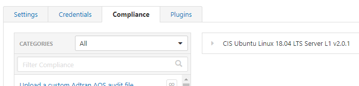

Compliance
On the PRO version of NESSUS we can use the Compliance check
In particular are very useful the CIS Benchmarks.
To use them first we need to find the OS of the target host and then select the more appropriate one from the list.
There are CIS with L1 (Level1) and L2 (Level 2), L1 is more soft and usually is the one to use because less invasive.